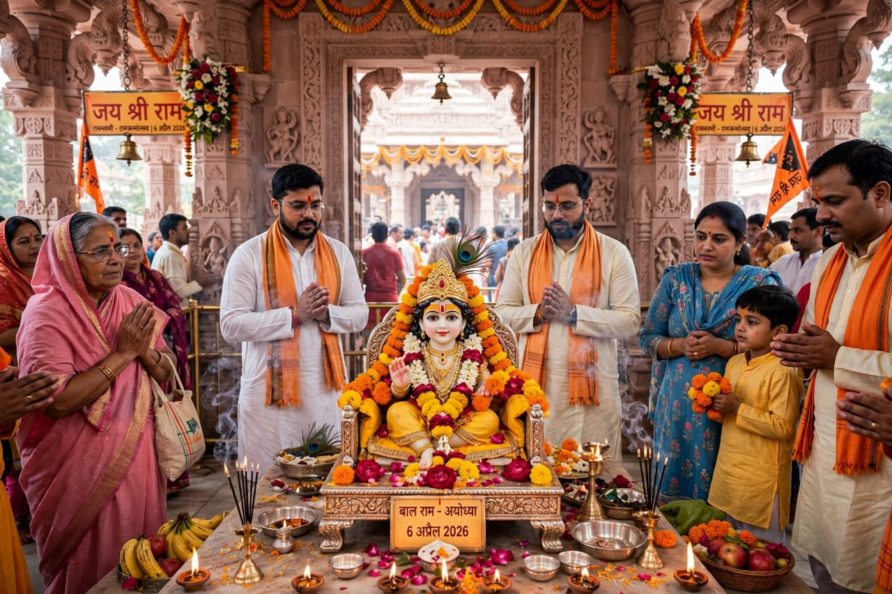
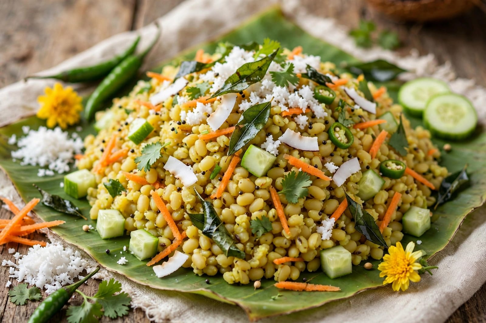

About Ram Navami
Ram Navami is an important Hindu festival celebrated in India. It marks the birth anniversary of Lord Rama. Lord Rama is an important figure in Hindu tradition. He is traditionally described as the seventh incarnation of Lord Vishnu. Ram Navami is celebrated on the ninth day of the Chaitra month. It is an important festival for devotees of Lord Rama. People celebrate the festival with prayers and devotion. Many devotees visit temples on this special day. Temples are decorated with flowers and lights. Special pujas are performed in many homes and temples. Devotees listen to stories about the life of Lord Rama. The Ramayana is an important part of the celebrations. Religious songs and bhajans are sung. Some people observe fasting during the festival. Devotees pray for peace and prosperity. Lord Rama is associated with qualities such as truth and righteousness. His life is remembered as an example of duty and devotion. People try to follow good values in their daily lives. Families gather together for prayers. Children also learn about the story of Lord Rama. Special religious programs are organized in many places. Processions are held in some towns and cities. Devotees participate in these processions with devotion. Images of Lord Rama, Sita, Lakshmana and Hanuman may be included. Music and devotional songs are played during celebrations. The festival creates a peaceful and joyful atmosphere. Ram Navami has great religious significance. It reminds people about the importance of truth and righteousness. The festival is celebrated with great faith and enthusiasm.
Ram Navami celebrations begin with special prayers. Devotees wake up early and prepare for the festival. Many people clean and decorate their homes. They visit temples with their families. Special pujas are performed in temples. Devotional songs and bhajans are sung. Religious texts are read during the celebrations. The Ramayana is often read or recited. Some temples organize special events for devotees. Processions are organized in many parts of India. Devotees walk together while singing devotional songs. Temples may be decorated with flowers and colorful decorations. Some people create beautiful rangoli designs outside their homes. Fasting is observed by some devotees. Fruits and special fasting foods are eaten by those who fast. After prayers, devotees may receive prasad. Prasad is shared with family members and other devotees. The birth of Lord Rama is celebrated with special rituals. In some temples, a small image of Lord Rama is placed in a decorated cradle. Devotees offer flowers and prayers. The festival also includes cultural programs in many places. Children participate in religious and cultural activities. Stories from the Ramayana are presented through plays and performances. The festival teaches the importance of good values. Lord Rama is remembered for his dedication to duty. He is also associated with honesty and compassion. The festival encourages people to follow the path of righteousness. Families spend time together during the celebrations. People greet relatives and friends. Special food is prepared in many homes. Ram Navami is celebrated differently in different regions. However, devotion to Lord Rama remains central to the festival.
Ram Navami is celebrated by people of different age groups. Children learn about Lord Rama and the Ramayana. Young people participate in cultural and religious programs. Elders guide families in traditional practices. The festival teaches the importance of truth. It encourages people to respect their duties. Devotees pray for peace and happiness. Families visit temples together. People share prasad with others. Community celebrations bring people together. Religious songs create a devotional atmosphere. Many people decorate their homes with flowers and rangoli. The festival preserves Indian cultural traditions. It also encourages children to learn about traditional stories. Lord Rama is remembered for his dedication to righteousness. His story teaches people about courage and responsibility. Ram Navami is a festival of faith and devotion. It creates happiness among families and communities. People celebrate the festival with prayers and cultural activities. The festival reminds people to follow good values. It encourages kindness, honesty and respect. Ram Navami is an important religious festival in India. It is celebrated with devotion, joy and enthusiasm.
Special Foods
Panakam
Panakam is a traditional sweet drink prepared during Ram Navami.

Kosambari
Kosambari is a traditional dish made with lentils and fresh ingredients.

Payasam
Payasam is a traditional sweet dish prepared during religious festivals.